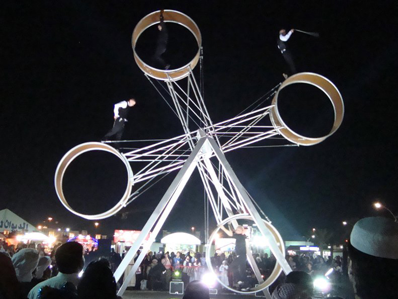
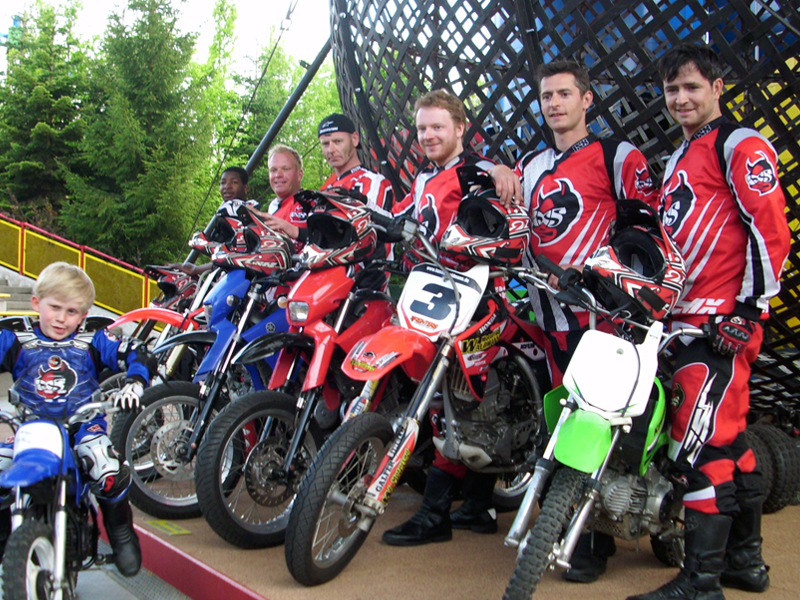
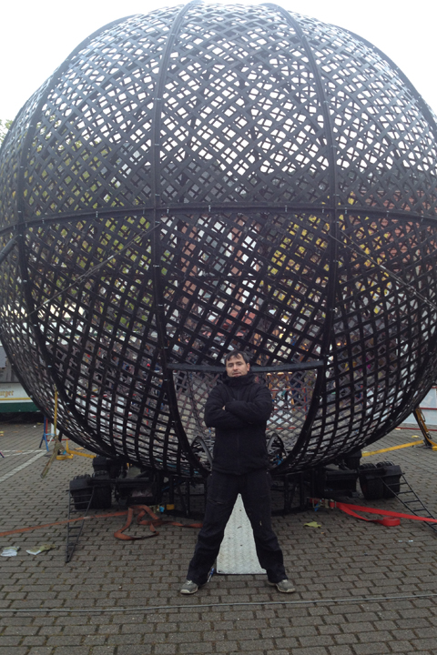
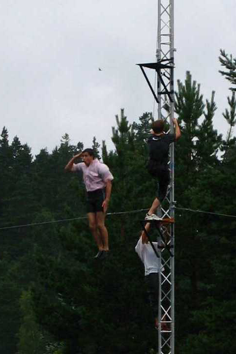
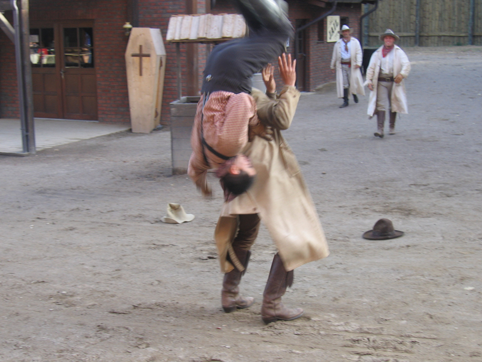
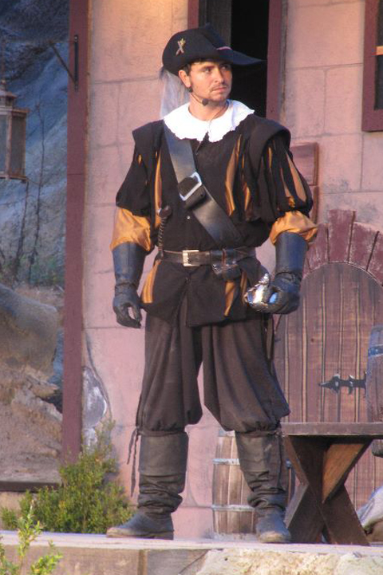
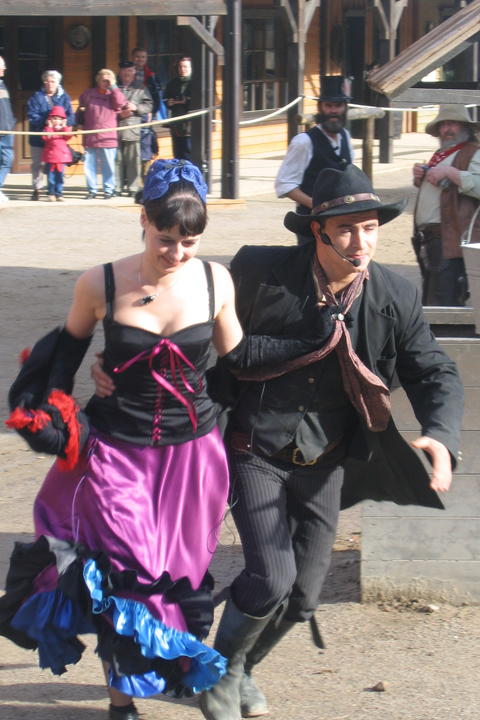
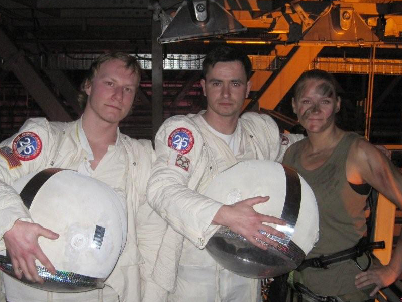

Action Artist
Video aus dem bisherigen Auftritt.
Bilder und Videos aus Stunt, Artistik, Bühne, Charakterarbeit und Produktionen.
Video aus dem bisherigen Auftritt.
Video aus dem bisherigen Auftritt.













